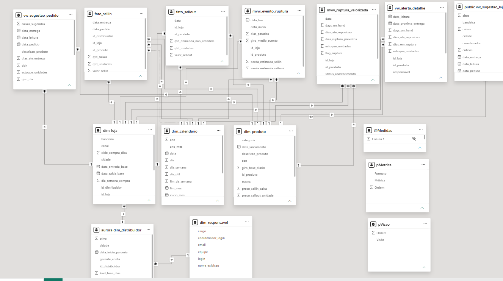
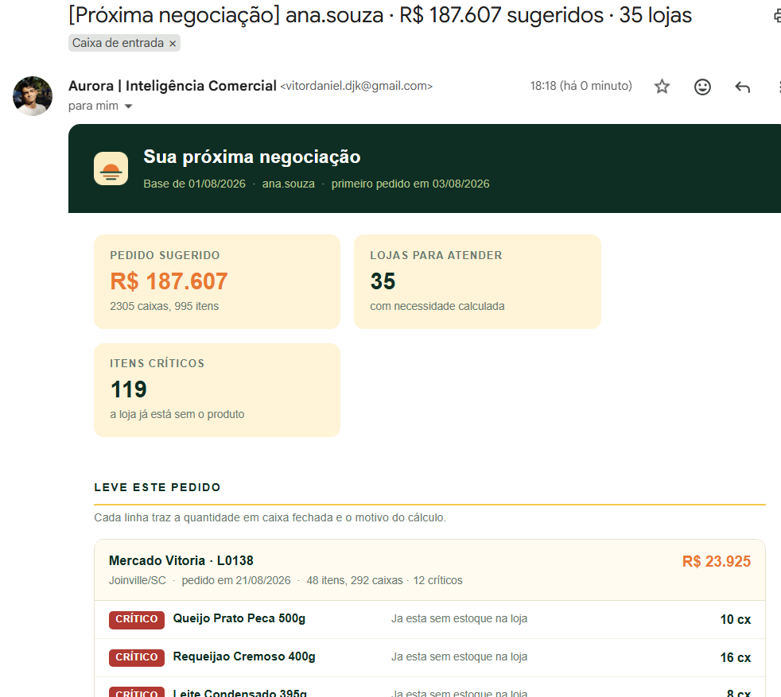

de linhas de fato carregadas no PostgreSQL (Aurora)
11,2%
dos pares de loja e produto por dia em ruptura na base gerada (Aurora)
27
unidades federativas na série de preços da ANP (Radar)
50 s
para o CI rodar o pipeline inteiro a cada push (Radar)
Experiência
Vigor Alimentos
analista de dados e BI
fev/2024 até hoje
assistente e estagiário de BI desde mai/2021
atualizado ago/2026
receita em riscoR$ 10 miidentificada por cliente, via previsão de ruptura
fontes no hub+40sell-in e sell-out, uma verdade só
uso do servidor45% a 22%consultas e modelos otimizados
economia anualUS$ 60 milna conta do Power BI
frente
o que fiz
resultado
Hub de dados
Warehouse em estrela com mais de 40 fontes (Scanntech, Nielsen, Mtrix, Neogrid, Involves) servido em Power BI com RLS dinâmico por estrutura comercial
fonte única de sell-in
Ruptura
Regressão da venda diária por cliente cruzada com estoque estima a data de ruptura e compara com o ciclo de compra
R$ 10 mi em risco
Distribuição
Power Automate consulta o hub, monta relatório em HTML por cargo e envia por e-mail e Teams, com alertas de inconsistência para o BI
sem depender de abrir painel
Governança
Ferramenta em Python que pontua modelos de Power BI antes da publicação, com hierarquia comercial sem duplicidade e histórico mensal em SQL
relatório ruim não sobe
Preço
Price index, ponte PVM e elasticidade com trade e vendas
base do módulo RGM
Ciência e Tecnologia, UFABC
inglês C1
Power BI e DAX
SQL
Python
Power Automate
SAP HANA
Aurora Alimentos
Distribuidora fictícia de laticínios e alimentos, construída de
ponta a ponta. A mesma base sustenta três camadas: descrever o que aconteceu,
prever o que vem e prescrever o que fazer.
01
Geração da base
Pythonpandasnumpy
48 produtos, 7.528 pares de loja e produto e 18 meses de sell-in,
de fevereiro de 2025 a julho de 2026: 3,4 milhões de linhas de fato
com semente fixa. Os parâmetros verdadeiros ficam ocultos no gerador,
o que permite comparar cada estimativa com o valor que a produziu.
A ruptura não é semeada: ela emerge do estoque dia a dia, em 11,2%
dos pares de loja e produto por dia.
Volumetria por tabela e percentual de dias em ruptura, na execução do gerador.
02
Banco, esquema e contrato
PostgreSQL 18
Modelo estrela com os fatos de sell-in, sell-out, estoque e agenda
de compra, dimensões conformadas e visões materializadas para o painel.
A camada de contrato em sql/00_contrato_aurora.sql
fixa nome, tipo e chave que o resto do projeto consome.
As tabelas carregadas, com contagem de linhas e janela de datas.
03
Modelo semântico e risco
Power BIDAX
Medidas de venda, estoque, cobertura e risco sobre as visões do banco:
cobertura em dias, giro diário, dias até a entrega e estoque em unidades.
A cobertura é sempre ponderada pela demanda, nunca média simples:
9,43 dias contra 15,21, diferença que inverte uma decisão de compra.
O cálculo de risco usa a data de entrega, não a data do pedido.

Modelo e relacionamentos no Power BI Desktop.
04
Telas do painel
HTMLCSS
9 telas geradas a partir de um só arquivo de estilo, do resumo
executivo ao próximo pedido. O visual do Power BI renderiza resultado
já calculado. Rodar Python ou R dentro do relatório foi descartado por
limite de amostragem, dependência de gateway e saída estática.
A tela de ruptura em valor, e à esquerda o menu com as nove telas.
05
Previsão de demanda
Pythonstatsforecast
Cada série de loja e produto é classificada por ADI e CV², segundo
Syntetos e Boylan, e roteada para AutoETS, CrostonOptimized ou
SeasonalNaive. O modelo campeão sai de backtest de origem móvel, não
de ajuste sobre a amostra inteira.
06
Sugestão de pedido
PythonDAX
A previsão entra na decisão de estoque em vez de ficar em relatório
separado. A política é order-up-to, com estoque de segurança derivado
do erro do próprio backtest. A tela fecha a carteira inteira: lojas com
necessidade calculada, itens já em caixa fechada e itens críticos, que
são os que já estão sem produto na loja.
Uma leitura da carteira: 80 lojas com necessidade calculada e 213 itens já sem estoque na loja.
07
Ponte de receita e preço
PythonscipySQL
Ponte PVM com nove efeitos: preço, volume, mix, lojas novas, lojas
perdidas, SKUs novos, SKUs descontinuados, positivação e despositivação.
O fechamento é verificado, a soma dos efeitos reconstrói a variação de
receita. A elasticidade sai de OLS log-log com controle de preço cruzado
e alimenta duas peças: um simulador de preços em grade pré-calculada e
um otimizador SLSQP com restrição de perda de share.
Telas 10 e 11 do Power BI em construção
08
Alertas por e-mail
PythonSMTP
Vendedor, gestor, diretor e reposição recebem versões diferentes do
mesmo alerta, cada um com o que precisa decidir. O e-mail traz o pedido
sugerido, as lojas para atender e os itens críticos, sem depender de
alguém abrir o painel.

O alerta como chega ao destinatário.
Radar de Preços de Combustíveis
Plataforma de dados sobre a série histórica de preços da ANP,
do download semanal ao mart pronto para análise. Dados públicos reais, dos
27 estados, com os arquivos oficiais.
01
Ingestão idempotente
PythonParquetDuckDB
Comparação por hash: só o que mudou é reprocessado. O bronze guarda o
arquivo como veio, com origem e data de ingestão em cada linha.
Segunda execução do dia: os 4 arquivos reconhecidos como inalterados e pulados, sem reprocessar nem duplicar.
02
Transformação em camadas e testes
dbtSQL
Três camadas com uma responsabilidade cada: tipar, deduplicar, modelar.
Os testes rodam em todo build, erro bloqueia e aviso pede investigação.
Na primeira execução real, um teste barrou um produto com a unidade grafada
de dois jeitos.
A execução verde depois da correção, com os 10 assets materializados.
03
Orquestração e linhagem
Dagster
Ingestão em Python e modelos do dbt como um grafo só: 10 assets, do
arquivo bruto da ANP ao resumo semanal. Agendamento semanal.
Linhagem completa: ingestão, staging, intermediária, dimensões, fato e resumo semanal.
04
Integração contínua e documentação
GitHub ActionsGitHub Pages
A cada alteração, o GitHub roda o pipeline inteiro contra dados de exemplo
versionados, em 50 segundos numa máquina limpa. Sem testes verdes, sem merge.
A documentação do dbt é publicada automaticamente.
O pipeline completo rodando a cada push, numa máquina limpa do GitHub.
Produto de trabalho real, em uso. Painel de risco de ruptura em rede de
varejo indireto: nove telas em HTML e CSS renderizadas por medidas DAX no
visual HTML Content, com alerta automático por e-mail e Teams.
A leitura é a mesma do Aurora, só que em ambiente de produção. O risco
chega a quem decide sem depender de alguém abrir relatório.
Sem captura
O dado e o arquivo são internos. Não há captura de tela nem repositório
público para este projeto.